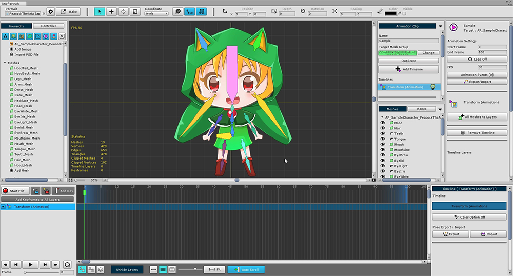
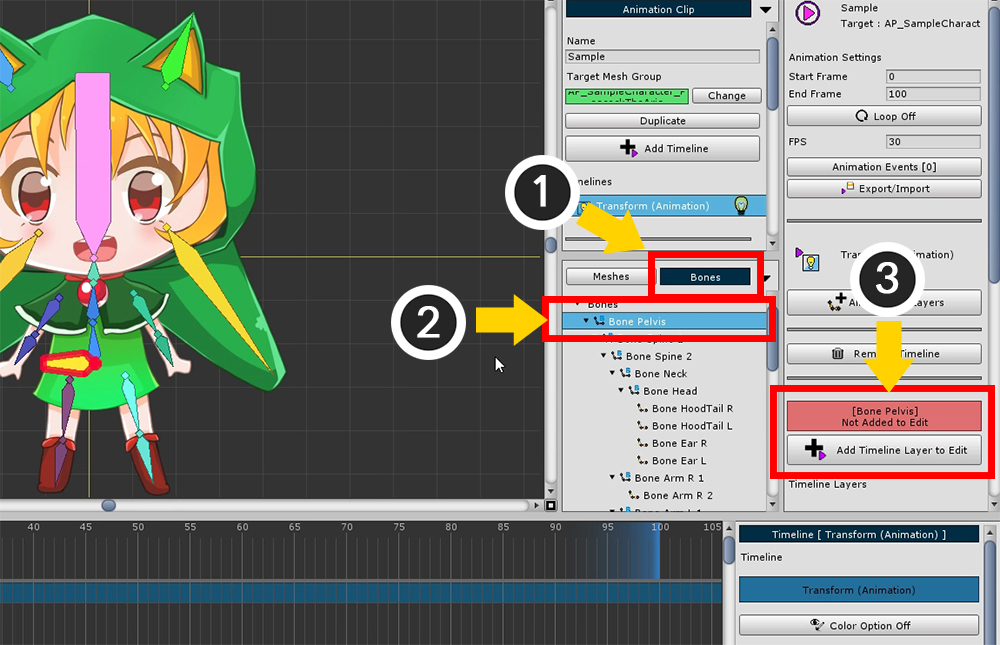
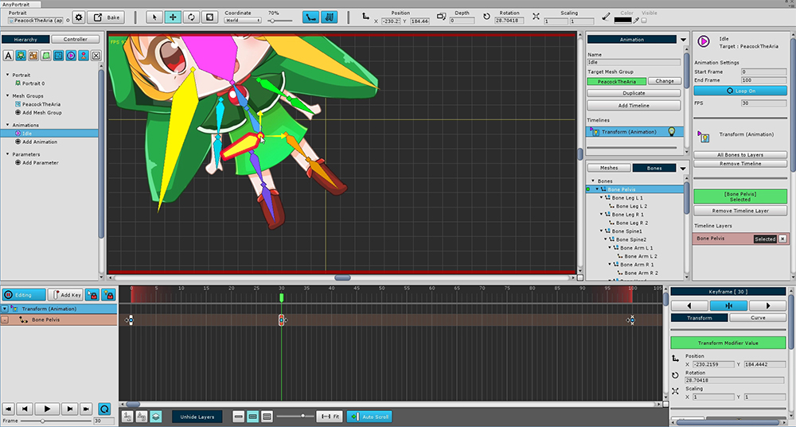
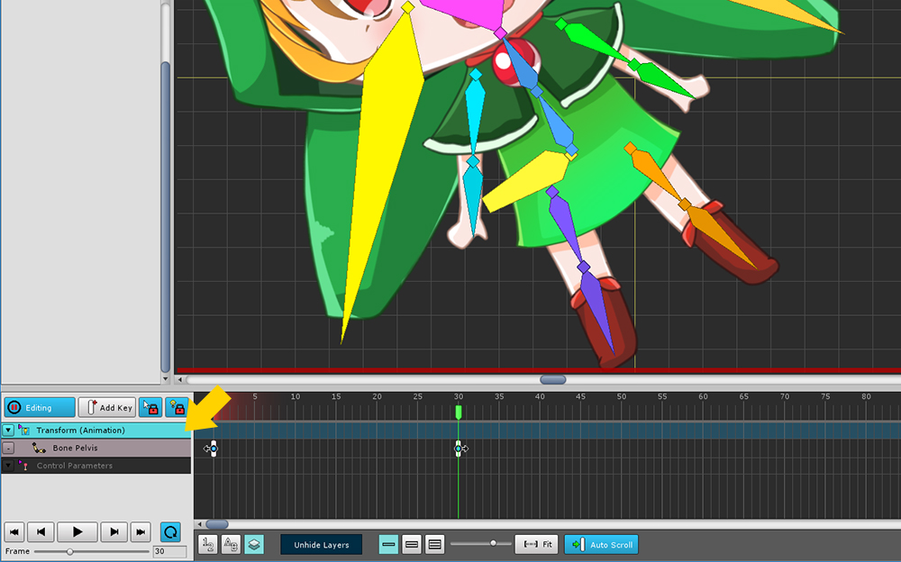
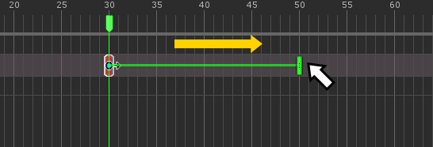
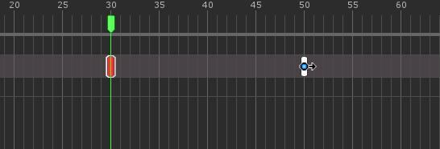

AnyPortrait > 入門ガイド > 2.7. タイムラインの追加
2.7. タイムラインの追加
1.0.0

キーフレームアニメーションを作成するには、アニメーションクリップにタイムラインを追加する必要があります。
(1) 「Add Timeline」ボタンをクリックして、追加できるタイムラインのタイプを表示します。
デフォルトでは、「Control Parameters」タイムラインがあり、メッシュグループから追加した「Animation Modifier」が表示されます。
前に作成した (2) 「Transform (Animation)」モディファイアを選択して追加します。

「Transform (Animation)」タイムラインが追加されました。

タイムラインに骨を追加します。
(1) 「Bone」タブに変更した後、(2) 一つの骨を選択します。
骨のプロパティのUIで (3) 「Add Timeline Layer to Edit」ボタンをクリックします。

「Bone Pelvis」のタイムラインレイヤーがタイムラインに追加されます。
アニメーションを作成するには、アニメーションクリップ、タイムライン、タイムラインレイヤーを順番に作成します。

(1) 「Start Edit」ボタン( A )を押すと、編集モードがオンになります。
(2) 「Add Key」ボタン( F )を押します。
(3) 現在のタイムスライダが配置される位置にキーフレームが作成されているのを見ることができます。

「編集モード」がオンで、キーフレームが選択されている場合は、オブジェクトを変形することができます。
このステータスはキーフレームに記録されます。

別のキーフレームを作成すると、アニメーションが機能します。
(1) タイムスライダを別のフレームに移動し、(2) 「Add Key」ボタンを押してキーフレームを作成します。

生成されたキーフレームで選択された骨を動かして記録します。
あなたがプレイすると、アニメーションが実行されます。
なぜキーフレームを選択したり、オブジェクトを選択できないのですか？
複数のタイムラインを追加して編集モードをオンにすると、オブジェクトを選択できない場合があります。
キーフレームを選択してオブジェクトを変更するには、「タイムラインとタイムラインレイヤー (Timeline and Timeline Layers)」の両方を選択する必要があります。

上記のスクリーンショットには2つのタイムラインが登録されています。
編集モードをオンにすると、選択されていないタイムラインはすべて無効になり、編集できなくなります。
(暗いタイムラインとキーフレームを見ることができます。)

この状態では、変更するタイムラインを選択できます。
左のタイムラインヘッダーをクリックするだけです。
(選択ロックがオンになっていても、タイムラインの選択が可能です。)

同様に、タイムラインレイヤーをクリックして、キーフレームとオブジェクトを選択することもできます。
選択できない場合、またはオブジェクトを変更できない場合は、ヘッダーをクリックしてください。
複数のキーフレームを選択する方法

キーフレームを選択するときは、「 マウスをドラッグして 」領域を指定することで、「キーフレームを選択する」ことができます。
複数のタイムラインレイヤーからキーフレームを同時に選択することもできます。


追加のキーフレームを選択するには、「 Shift または Ctrl 」と「 マウスをドラッグ 」を押し続けます。
(Mac OSXでは、 Command を Ctrl の代わりにショートカットとして使用します。)


「 Alt 」と「 マウスをドラッグ 」を押しながら選択したキーフレームを除外します。
キーフレームを移動またはコピーする方法

選択したキーフレームを「 ドラッグ＆ドロップ 」することで別のフレームに移動することができます。
選択したすべてのキーフレームが同時に移動します。


コピーするには、「 Shift または Ctrl 」を押しながらキーフレームを「 ドラッグ＆ドロップ 」します。
(Mac OSXでは、 Command を Ctrl の代わりにショートカットとして使用します。)